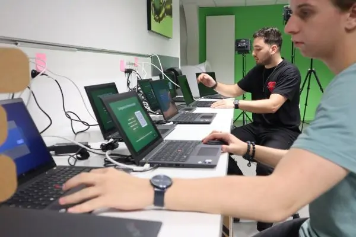

Maintenance & Infogérance
Simplifiée & Sécurisée. Ne laissez plus les pannes ralentir votre activité.
Qu'est-ce que la maintenance informatique ?
La maintenance informatique vise à garantir le bon fonctionnement des ordinateurs et des dispositifs associés.
Assurer une maintenance régulière est essentiel pour la pérennité de votre système informatique. Étant donné la sensibilité de certaines données, la sollicitation d'un expert garantit la continuité et la sécurité.
Dans le contexte actuel, maintenir la robustesse de vos infrastructures informatiques est primordial. Il est crucial d'anticiper toute panne ou anomalie potentielle.
Notre équipe est là pour vous orienter sur le moment opportun et les raisons de consulter un professionnel en cas de besoin.
Quel niveaux de maintenance sont essentiel pour votre informatique ?
1) Prévenir et vérifier
Cette forme de maintenance est proactive. Cela implique que nous effectuons des vérifications régulières de votre système pour identifier et corriger les éventuelles anomalies avant qu'elles ne deviennent des problèmes majeurs.
Les actions courantes inclus des mises à jour de votre système pour prévenir de failles de sécurité, des diagnostics réguliers, et des ajustements pour garantir la performance optimale du système.
2) Détecter et corriger
La maintenance corrective intervient après la détection d'un problème ou d'une panne.
Elle vise à diagnostiquer la cause racine de l'incident et à mettre en œuvre des solutions appropriées pour restaurer la fonctionnalité normale du système dans les plus brefs délais.
3) Evoluer
Avec l'évolution rapide de la technologie, ce dernier niveau de maintenance s'assure que votre système informatique reste à jour et performant.
Elle implique l'adaptation et l'intégration de nouvelles technologies ou de mises à niveau pour répondre aux besoins changeants de l'entreprise et aux avancées du marché.
Si vous ressentez le besoin de renforcer la sécurité de votre ordinateur ou de votre réseau, sachez que notre équipe dédiée est à votre disposition.
Nous comprenons les enjeux actuels de la cybersécurité et sommes équipés pour vous guider. Plus encore, nous sommes prêts à vous détailler les compétences et le rôle essentiel d'un technicien informatique dans le maintien et l'amélioration de la santé de votre système. N'hésitez pas à solliciter notre expertise pour des conseils personnalisés et une assistance sur mesure.
Les dysfonctionnements de votre informatique, peuvent avoir d'importantes
répercussions sur votre bonne activité professionnelle.
Choisissez d'être accompagné dans votre quotidien, avec nos solutions au budget maitrisé et sans
surprise, nos forfaits sont adaptés et fait sur mesure.
Maintenance de poste
Les dysfonctionnements de votre informatique, peuvent avoir d'importantes répercussions sur votre bonne activité professionnelle.
Budget maitrisé et sans surprise, nos forfaits sont adaptés et fait sur mesure.
- Prise en charge à distance de l'ordinateur
- Intervention sur site dans la journée pour les pannes majeures, et 48 heures pour les problématiques non bloquantes.
- Une maintenance annuelle préventives.
- L'installation des logiciels Microsoft

Poste supplémentaire
Ajoutez à tout moment d'autres postes à votre maintenance.
Et toujours inclus :
- La prise en charge à distance de l'ordinateur
- Une maintenance annuelle préventives.
- La prise en charge sur site pour les pannes non résolue à distance
- L'installation des logiciels Microsoft
- Pour les PC fixes, le remplacement des pièces est inclus

Aide à l'utilisation Pro
Bénéficiez d'une aide élargie à l'utilisation des vos logiciels Microsoft et de tous vos périphériques informatique.
Avec notre service nous prenons la main sur vos ordinateurs à distance pour vous aider dans votre quotidien avec votre équipement informatique.
Forfait valable pour une prise en mains jusqu'à 5 postes et complémentaire de votre contrat de prestation de maintenance.

Préparation de poste Pro
Pour garantir une productivité maximale, optimiser votre matériel.
Nous vérifions votre ordinateur et ses ressources nécessaires pour vos tâches professionnelles.
Nous mettons à niveau votre matériel. Les logiciels et applications métier ont des exigences nous vous assistons dans leur installation. Que ce soit des logiciels de traitement de texte, de comptabilité ou tout autre outil spécifique à votre activité professionnelle, assurez-vous de bénéficier d'un outil pleinement fonctionnel.
Pourquoi Factor-I ?
Réactivité
Intervention sous 4h pour les pannes critiques.
Confidentialité
Vos données sont sensibles, nous les protégeons.
Proximité
Un expert local dédié à votre entreprise.